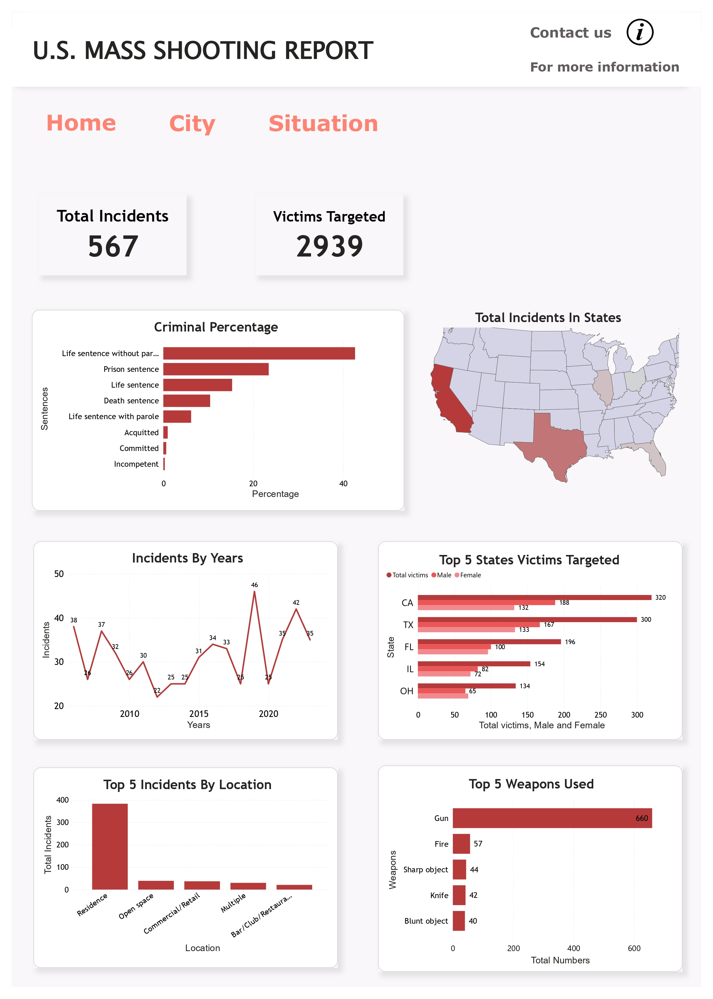
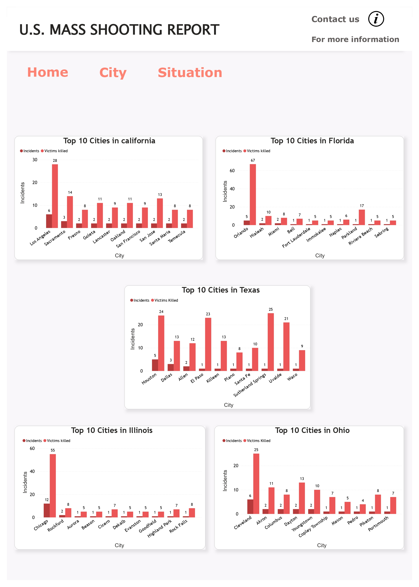
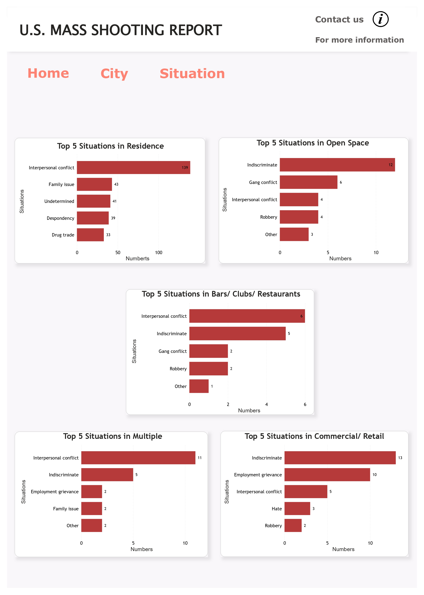

U.S. MASS SHOOTING ANALYSIS
GOVERNMENT / CRIME

Project Background
Mass shootings in the United States have become a pressing and deeply concerning issue, capturing the attention of the nation and the world. Characterized by incidents in which a single gunman targets a large number of people in a public space, these events have sparked debates on gun control, mental health, and societal factors contributing to such violence. These horrific incidents have left communities reeling, families shattered and the nation grappling with the question of gun violence. In 2023 alone, there have been over 565 mass shootings, an average of nearly two per day. The impact of mass shootings extends beyond immediate casualties, affecting survivors mental health, traumatizing witnesses and fostering a pervasive sense of fear in public spaces like schools, shopping centers and places of worship. As these incidents continue to rise, the debate around gun culture, Second Amendment rights and public safety remains a critical and highly divisive issue in the country.
Problem Statement:
These events occurred raise critical questions around gun control, mental health and societal contributors to violence. Despite calls for legislative reform and mental health interventions the nation struggles to implement effective solutions to prevent these tragedies. This issue not only results in immediate loss of life but also causes long-term psychological trauma to survivors and communities. The easy accessibility of firearms, insufficient mental health support, and societal issues such as alienation and extremism all contribute to the perpetuation of this alarming trend. As the number of incidents continues to rise, there is an urgent need to address the root causes and implement comprehensive measures to prevent and respond to mass shootings effectively.
Objective:
- This objective aims to analyze data on mass shootings in the United States, understanding their frequency, locations, victims and potential motivating factors.
- By analyzing historical data, the project will seek to identify trends in mass shootings over time, such as changes in frequency, target locations, weapon types.
- The analysis will aim to identify potential risk factors and contributing causes to mass shootings, providing insights for developing effective prevention strategies.
Contribution:
- This project aims to contribute to the national conversation about gun violence and mass shootings, promoting public awareness and encouraging policymakers to address this complex issue.
- By identifying patterns and risk factors, my analysis will contribute to the development of evidence-based strategies for preventing future mass shootings.
- Findings can empower policymakers to make informed decisions about gun control, mental health resources, and other potential danger.
Scope:
- Timeframe: We'll set our sights on the past 15 years, capturing the recent surge in mass shootings and allowing for meaningful comparisons across time.
- Focus areas: Analyze factors like shooter demographics, type of weapon, location, time of day, and potential motivations to identify patterns and risk factors.
- Deliverables: Develop interactive Power BI dashboards and reports that effectively present findings, incorporating maps, charts, and clear summaries.
- Story: This isn't just about numbers, it's about lives lost and communities forever changed. We'll present our findings with sensitivity and respect for victims and their families.
Code:

Executive Summary:
Note: The Dashboard is Static just to have overall glimpse

- Overall, 2939 victims were targeted in 567 total incidents. Incidents peaked in 2019 with 46,000 cases, which dropped to 35,000 in 2023.
- In California, 320 victims were targeted, followed by Texas with 300. In contrast, Ohio had the lowest number of targeted victims at 134.
- Most incidents occurred in residences, accounting for nearly 400,000 cases while bars, clubs, and restaurants had the lowest number, with fewer than 50,000 incidents.
- Guns were used by criminals in 660 cases, making them the most common weapon, while blunt objects were used in only 40 cases, the lowest among other weapons.


Solution:
To achieve the project objectives, SQL queries are used to extract, clean, and prepare the data related to mass shooting incidents from various sources. Power BI is then employed to create interactive dashboards and visualizations that enable stakeholders to explore key metrics, trends, and patterns in the data. The analysis formulate clear and actionable recommendations for policymakers, mental health professionals and gun safety advocates. Sharing my results through reports, presentations and dashboards to reach a wide audience and encourage informed discussion on this critical issue.
Recommendations:
- Allocate resources and interventions to California, Texas, Florida, Illinois, and Chicago where most victims are targeted. This could involve increased mental health support, community outreach programs and stricter gun control measures in these areas.
- Focus on improving security measures in residences, the most common shooting location. This could involve promoting home safety assessments, gun safety locks, and community watch programs.
- Increase security measures in open spaces and commercial/retail locations, the second and third most frequent sites of shootings.
- Prioritize initiatives aimed at decreasing mass shootings, which peaked in 2021 and 2022. This might involve analyzing recent trends and tailoring prevention efforts to address emerging patterns.
- Advocate for gun safety education programs to promote responsible gun ownership and safe storage practices.
- Provide resources and support to victims and families affected by mass shootings, including trauma counseling and financial assistance.
Overall Static Dashboard:
(Note: You can only filter with the below dashboard)